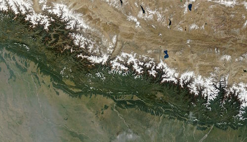

|
Projects
Internships
Qualcomm India Pvt. Ltd., Hyderabad, India (May — July 2016)
Mentor – Mr. Amarnath Vangala
|
|
Implemented a parser in Python for reading the input log files
Designed a command sequencer in C++ for reading commands from the log files and simulating a voice call in ADSP test framework on the Hexagon Simulator
|
Indian Institute of Remote Sensing Dehradun, India (May — July 2015)
(a subsidiary of Indian Space Research Organisation (ISRO), Department of Space, Govt. of India)
Mentors – Dr. Sameer Saran & Dr. Shefali Agarwal
|
 |
Designed an open source plugin (in Python) for QGIS to run data mining algorithms on multi-band raster datasets
The plugin was designed to run classification algorithms like Decision Trees, AdaBoost and Random Forest on geo-spatial satellite data [GitHub] [Publication]
Implemented algorithms for detecting intervals of gradual increase or decrease in time series data using Persistent Delta Approach (Chamber et al.)
The tool (developed in MATLAB) was used to identify intervals of gradual deforestation in the Himalayan foothills
|
Course Projects
Compiler Design and Implementation (Spring 2016)
(As a part of Compiler Construction course under Vandana Agarwal)
Developed an entire compiler for a dummy programming language having constructs like structures and functions [GitHub]
Implemented various modules like lexical analyzer, parser, semantic analyzer, scope and type checker in C++
The compiler finally gave an ASM output file which can be linked and run using any basic ASM tool like gcc
Character Recognition (Fall 2015)
(As a part of Machine Learning course under Prof. Navneet Goyal)
Gesture Recognition (Fall 2015)
(As a part of Machine Learning course under Prof. Navneet Goyal)
Mine Exploration Vehicle (Spring 2015)
(As a part of Microprocessors & Interfacing course under G. Sai Sesha Chalapathi)
Logic Programming in Prolog (Fall 2014)
(As a part of Logic in Computer Science course under Prof. S. Balasubramaniam)
|